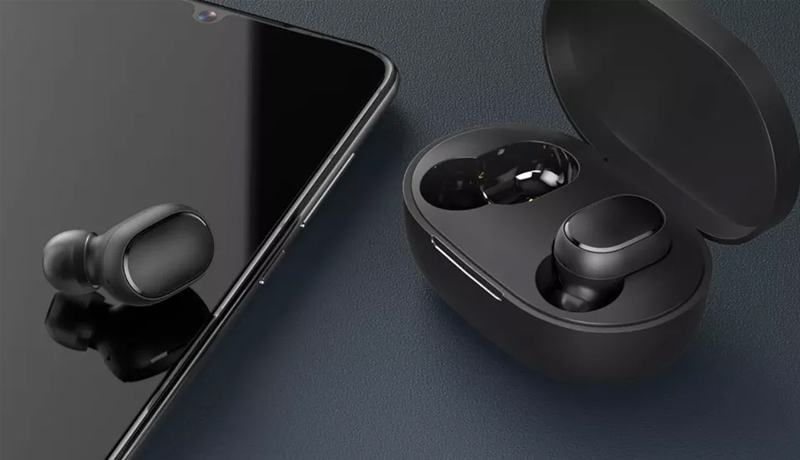
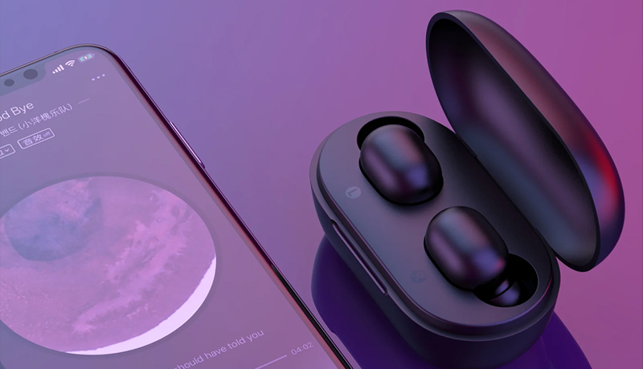

Diga adeus aos fios! Descubra qual é o melhor fone de ouvido de 2023
Xiaomi Redmi Airdots 2: Melhor link para compra no site oficial da Amazon
O Redmi AirDots 2 é um dos fones bluetooth mais populares do mundo.
O grande trunfo do fone da Xiaomi é o custo-benefício. O AirDots 2 é um dos fones true wireless mais baratos e entrega um conjunto de especificações razoável para o preço. Além disso, outra vantagem está no design, que é bastante confortável e encaixa bem no ouvido.
O Redmi AirDots 2 traz apenas o básico na caixa, ou seja, o fone e o estojo carregador. Além disso, ele vem com três pares de ponteiras em tamanhos diferentes para melhor ajuste na orelha. O acessório de tamanho médio já vem instalado no fone, mas você pode remover e trocar pelos outros.
O Redmi AirDots 2 tem praticamente o mesmo design do AirDots original e do AirDots S. Nesse sentido, a Xiaomi não fez mudanças no fone de ouvido, que mantém o visual intra-auricular. Nem sempre esses modelos são os mais confortáveis, visto que entram no canal auditivo. No entanto, o dispositivo foi uma grata surpresa: ele fica bem encaixado no ouvido e não causa incômodos. Além disso, o acessório é leve, e cada fone tem apenas 4,1 g. Por isso, você nem sente que está com ele na orelha.
A ficha técnica do fone da Xiaomi é boa, com drivers dinâmicos de 7,2 mm e resposta de frequência de 20 Hz – 20 KHz, valores que estão dentro dos padrões. No entanto, na prática, é possível perceber que o fone deixa um pouco a desejar nos graves, apesar da promessa de reforço nessa frequência. De forma geral, o produto tem áudio equilibrado, mas usuários que valorizam graves mais potentes, certamente vão sentir isso.
Quanto às ligações, o AirDots 2 oferece boa qualidade. É possível ouvir com clareza o que a outra pessoa está falando. Além disso, o fone da Xiaomi recebeu melhorias no microfone em relação à geração anterior, o que garante que a pessoa do outro lado vai te entender bem.
Em relação à bateria, cada fone Redmi AirDots 2 tem capacidade de 43 mAh e a case conta com 300 mAh. A fabricante promete até quatro horas de reprodução contínua com uma única carga. Além disso, o estojo carregador garante mais 12 horas de música, ou seja, mais três recargas completas.

Durante nossos testes, a bateria do fone da Xiaomi surpreendeu e aguentou durante 4 horas e 35 minutos. O aparelho começou a emitir um alerta sonoro quando chegou em 10%, mas ainda resistiu por uns 30 minutos.
Sobre conectividade, o Xiaomi AirDots 2 se destaca por vir com Bluetooth 5.0, padrão mais atual que oferece mais estabilidade. Aliás, esse é um dos principais pontos de melhoria do modelo em relação ao AirDots original e ao AirDots S. A versão lançada em 2020 se conecta ao celular pareado com mais facilidade, basta abrir o estojo carregador.
Além disso, é possível usar apenas um lado do fone enquanto o outro permanece na case carregando. Durante nossos testes, não tivemos problemas relacionados à configuração e pareamento, que costumavam ser relatados por donos da versão anterior. O fone da Xiaomi tem alcance de até 10 metros em um ambiente livre de obstáculos. Em nosso caso, foi possível mudar de cômodo dentro de casa sem causar interferências no som.
Recursos extras
O principal destaque do Redmi AirDots 2 está no Modo Gaming, novidade lançada no AirDots S. A função promete diminuir a latência durante os jogos, ou seja, evitar atrasos no áudio durante as partidas. Para ativar, basta pressionar o botão três vezes seguidas. No entanto, na prática, não sentimos muita diferença entre o recurso ligado ou desativado.
Prós:
- Preço acessível: Os Redmi Airdots 2 são bastante acessíveis em relação a outros fones de ouvido sem fio no mercado, tornando-os uma opção atraente para quem tem um orçamento mais limitado.
- Qualidade de som: A qualidade de som dos fones de ouvido é bastante decente para o preço, com um som claro e definido.
- Conexão Bluetooth: A conexão Bluetooth é estável e confiável, tornando fácil a conexão com dispositivos como smartphones e tablets.
- Design compacto e leve: Os fones de ouvido são compactos e leves, tornando-os fáceis de transportar e usar durante todo o dia.
Contras:
- Duração da bateria: A duração da bateria pode ser um pouco curta em comparação com outros fones de ouvido sem fio, com uma duração média de cerca de 4 horas com uma única carga.
2 Fone de ouvido sem fio HAYLOU GT1 PRO: Melhor link para compra no site oficial da Amazon
O HAYLOU GT1 PRO possui um design bastante compacto e elegante, com um formato que se adapta bem aos ouvidos. Os fones de ouvido possuem um controle touch que permite controlar a reprodução de música, ajustar o volume e atender chamadas telefônicas. A case de carregamento do fone também é bastante compacta, facilitando o transporte dos fones de ouvido.
Quanto à qualidade de som, o HAYLOU GT1 PRO oferece um som nítido e balanceado, com graves bem definidos. A conexão Bluetooth é estável e confiável, sem interrupções frequentes. Além disso, o fone possui cancelamento de ruído ativo, o que ajuda a reduzir os ruídos externos e proporcionar uma melhor experiência sonora.
A bateria do HAYLOU GT1 PRO tem uma boa duração, permitindo até 26 horas de uso combinado entre os fones de ouvido e a case de carregamento. O tempo de carga é relativamente rápido, levando cerca de 1 hora e meia para uma carga completa.

Em geral, o HAYLOU GT1 PRO é uma excelente opção para quem busca um fone de ouvido sem fio de qualidade a um preço acessível. Ele oferece um bom desempenho em termos de qualidade de som, bateria e conexão Bluetooth, além de um design elegante e confortável.
O HAYLOU GT1 PRO é um fone de ouvido sem fio com várias características interessantes, incluindo boa qualidade de som, boa duração da bateria e design confortável. No entanto, como qualquer produto, existem prós e contras a serem considerados. Aqui estão alguns deles:
Prós:
- Qualidade de som: O HAYLOU GT1 PRO oferece boa qualidade de som com graves profundos e agudos claros. Ele também oferece cancelamento de ruído passivo, o que ajuda a bloquear ruídos externos.
- Bateria: A bateria do HAYLOU GT1 PRO pode durar até 26 horas com o estojo de carregamento, o que é muito bom para um fone de ouvido sem fio.
- Design: O design do HAYLOU GT1 PRO é elegante e confortável. Ele se encaixa bem nos ouvidos e não causa desconforto mesmo após longos períodos de uso.
- Conectividade: O HAYLOU GT1 PRO usa tecnologia Bluetooth 5.0, o que significa que a conexão é rápida e confiável. Ele também possui um alcance de até 10 metros.
Contras:
- Microfone: O microfone do HAYLOU GT1 PRO não é tão bom quanto o de alguns outros fones de ouvido sem fio. Isso pode levar a problemas de qualidade de chamada.
3 JBL Tune 500 T500BTBLK: Melhor link para compra no site oficial da Amazon
O fone de ouvido JBL Tune 500 T500BTBLK é uma excelente escolha para quem procura um fone de ouvido sem fio de alta qualidade. Este fone de ouvido é fabricado pela JBL, uma das marcas mais respeitadas no mundo do áudio. O JBL Tune 500 T500BTBLK possui um design elegante e moderno, com almofadas auriculares macias e confortáveis que permitem o uso prolongado sem desconforto. Além disso, ele possui uma bateria de longa duração, que permite até 16 horas de reprodução contínua de música, podcast ou chamadas. A qualidade de som é excelente, com graves profundos e agudos nítidos, e a tecnologia Pure Bass da JBL garante um som rico e imersivo. O fone de ouvido também é equipado com microfone embutido e controles de botão na orelha para atender chamadas e controlar a reprodução de músicas.Em geral, o HAYLOU GT1 PRO é uma excelente opção para quem busca um fone de ouvido sem fio de qualidade a um preço acessível. Ele oferece um bom desempenho em termos de qualidade de som, bateria e conexão Bluetooth, além de um design elegante e confortável. O JBL Tune 500 T500BTBLK é muito fácil de conectar ao seu dispositivo móvel, seja ele um smartphone, tablet ou computador. Ele usa a tecnologia Bluetooth para conexão sem fio e a conexão é rápida e estável. Se você procura um fone de ouvido sem fio de alta qualidade, o JBL Tune 500 T500BTBLK é uma excelente escolha. Com sua excelente qualidade de som, design confortável e bateria de longa duração, ele é perfeito para ouvir música, podcasts ou atender chamadas, sem fio e com toda a praticidade.
Prós:
- Qualidade de som excepcional: O JBL Tune 500 T500BTBLK produz um som claro e nítido, com graves bem definidos. Você pode desfrutar de uma experiência de áudio imersiva ao ouvir sua música favorita, assistir a filmes ou jogar jogos.
- Conforto: As almofadas auriculares macias garantem um ajuste confortável durante horas de uso. Além disso, o design dobrável torna-o fácil de transportar e guardar em sua bolsa ou mochila.
- Conectividade sem fio confiável: A tecnologia Bluetooth permite que você se conecte ao seu dispositivo sem a necessidade de fios emaranhados ou limitações de movimento. O fone de ouvido pode se conectar facilmente a smartphones, tablets e laptops.
- Longa duração da bateria: A bateria pode durar até 16 horas com uma única carga, o que significa que você pode usá-lo por um longo período de tempo sem se preocupar com a recarga frequente.
- Preço acessível: Comparado com outros fones de ouvido sem fio de marcas similares, o JBL Tune 500 T500BTBLK tem um preço acessível, sem comprometer a qualidade de som e conforto.
Contras:
- O microfone embutido no fone de ouvido não é muito eficaz em ambientes barulhentos, tornando-o menos ideal para chamadas telefônicas ou videochamadas em áreas movimentadas.
Em resumo, se você está procurando um fone de ouvido sem fio com boa qualidade de som, conforto e longa duração da bateria, o JBL Tune 500 T500BTBLK é uma excelente opção. Com seu preço acessível e conectividade sem fio confiável, é um bom investimento para quem quer comprar um fone de ouvido com bom custo-benefício.
4 Fone de Ouvido Tune 115BTJBLT115BTWHT - JBL Melhor link para compra no site oficial da Amazon
O fone sem fio Tune 115BT da JBL é uma excelente opção para quem deseja um fone de ouvido com boa qualidade sonora, design moderno e bom custo-benefício. Com uma bateria de longa duração, os usuários podem desfrutar de até 8 horas de reprodução contínua, permitindo que ouçam suas músicas favoritas durante todo o dia.
O Tune 115BT é fácil de usar e possui controles intuitivos, com botões de controle de música e chamadas convenientemente localizados na parte superior do fone. Além disso, o fone apresenta um cabo flat resistente a emaranhamento, que ajuda a evitar que o fone fique bagunçado e difícil de usar.
A qualidade sonora é um dos pontos fortes do Tune 115BT, com drivers de 8,6mm que produzem graves potentes e agudos nítidos. O som é equilibrado e claro, permitindo que os usuários ouçam todos os detalhes da música.
Outra característica positiva do Tune 115BT é a sua compatibilidade com assistentes de voz, como Siri e Google Assistant. Isso permite que os usuários controlem facilmente suas músicas e chamadas usando apenas sua voz, sem precisar pegar o telefone.
Por fim, o Tune 115BT é um fone confortável de usar, com pontas auriculares macias e flexíveis que se adaptam facilmente aos ouvidos. Isso ajuda a reduzir o desconforto durante o uso prolongado, tornando o fone uma excelente opção para uso diário.
Em resumo, o Tune 115BT da JBL é um fone sem fio com excelente qualidade sonora, design moderno, boa duração de bateria, fácil de usar, compatível com assistentes de voz e confortável. É uma excelente opção para quem busca um bom fone de ouvido com bom custo-benefício.
Prós:
- Qualidade de som excelente: o som é nítido e bem equilibrado, com graves profundos e agudos nítidos.
- Conexão Bluetooth fácil: o fone de ouvido se conecta facilmente a dispositivos Bluetooth, como smartphones e tablets.
- Bateria de longa duração: a bateria do Tune 115BTJBLT115BTWHT pode durar até 8 horas com uma única carga, permitindo que você ouça música o dia todo sem precisar recarregar.
- Controle remoto integrado: há um controle remoto integrado aos fones de ouvido, permitindo que você ajuste o volume, alterne faixas e atenda chamadas com facilidade.
Contras:
- Isolamento de ruído limitado: embora os fones de ouvido Tune 115BTJBLT115BTWHT ofereçam um som excelente, o isolamento de ruído não é tão eficaz quanto alguns outros fones de ouvido sem fio disponíveis no mercado.
5 Fone de Ouvido Tws X3, Edifier: Melhor link para compra no site oficial da Amazon
O fone de ouvido TWS X3 da Edifier é um dispositivo sem fio que oferece uma experiência sonora de alta qualidade e conforto de uso. Ele é projetado para ser leve e portátil, permitindo que você o leve para onde quer que vá. Aqui estão algumas características e recursos que o tornam um bom produto:
Conexão sem fio: o TWS X3 utiliza a tecnologia Bluetooth 5.0 para conectar-se com dispositivos compatíveis. Isso permite que você se livre de fios e aproveite a liberdade de movimento enquanto ouve sua música ou faz chamadas.
Qualidade de som: com drivers de 8mm e suporte para os codecs de áudio SBC e AAC, o TWS X3 oferece um som claro e detalhado, com graves potentes. Ele também possui um equalizador personalizável para que você possa ajustar o som de acordo com suas preferências.
Conforto e ajuste: os fones de ouvido do TWS X3 vêm com três tamanhos de pontas de ouvido de silicone para garantir um ajuste confortável e seguro em seus ouvidos. Eles também possuem um design ergonômico que se adapta aos contornos de seus ouvidos, reduzindo a fadiga e o desconforto durante o uso prolongado.
Controles e microfone: o TWS X3 possui botões de controle táteis em cada fone de ouvido que permitem que você ajuste o volume, pause e reproduza a música, atenda chamadas e acesse o assistente de voz do seu dispositivo móvel. Ele também possui um microfone integrado para chamadas telefônicas e comandos de voz.
Bateria e carregamento: cada fone de ouvido possui uma bateria de íon de lítio de 60mAh que oferece até 8 horas de reprodução de música ou 7 horas de chamadas. O estojo de carregamento incluído possui uma bateria de 500mAh que pode recarregar os fones de ouvido até três vezes, proporcionando um total de 24 horas de reprodução de música. O estojo de carregamento pode ser carregado por meio de um cabo USB-C incluído.
Prós:
- Conforto: O TWS X3 tem um design ergonômico com pontas auriculares de silicone macio que se encaixam confortavelmente no canal auditivo. Além disso, como é sem fio, você não precisa se preocupar com cabos emaranhados ou presos em roupas ou objetos.
- Qualidade de som: O TWS X3 oferece uma qualidade de som decente para o seu preço, com graves ricos e agudos claros. Ele também tem um bom isolamento de ruído, que ajuda a bloquear o som externo para uma experiência de audição imersiva.
- Conectividade: O TWS X3 é fácil de parear com dispositivos Bluetooth, e você pode alternar entre os dois fones de ouvido para usá-los individualmente ou juntos.
- Controle de toque: O TWS X3 tem um painel de toque em cada fone de ouvido, permitindo que você controle a reprodução de música, atenda chamadas telefônicas e ajuste o volume sem precisar pegar o dispositivo de reprodução de áudio.
Em resumo, o TWS X3 da Edifier é um fone de ouvido sem fio com ótimo som, conforto e funcionalidade. Ele oferece uma conexão confiável e controles intuitivos, tornando-o uma boa opção para quem procura um fone de ouvido TWS de qualidade
Contras
- Limitações de alcance: O TWS X3 tem um alcance limitado de cerca de 10 metros. Se você se afastar muito do dispositivo de reprodução de áudio, pode experimentar falhas na conexão.
6 Sony Wi-C200/B: Melhor link para compra no site oficial da Amazon
O fone de ouvido Sony Wi-C200/B é um modelo de fone de ouvido sem fio com conexão Bluetooth, projetado para proporcionar uma experiência de audição de qualidade em movimento. Ele apresenta um design leve e compacto, tornando-o uma excelente escolha para pessoas que desejam um fone de ouvido portátil para usar durante atividades físicas, viagens ou simplesmente para o uso diário.
O fone de ouvido Sony Wi-C200/B possui um microfone integrado, permitindo que você faça chamadas telefônicas com as mãos livres, além de possuir botões para controle de reprodução de música e chamadas telefônicas, tornando a utilização bastante fácil e intuitiva. Além disso, ele possui um cabo flat (que evita que o fio fique embolado) e três opções de tamanhos de protetores auriculares para garantir o ajuste perfeito e o máximo de conforto para cada usuário.
A qualidade do som é outra característica notável deste fone de ouvido. Ele utiliza drivers de neodímio de 9mm para produzir som claro e nítido, e possui suporte para codecs de áudio de alta qualidade, como o AAC e o SBC. Com uma bateria de longa duração, o Sony Wi-C200/B oferece até 15 horas de reprodução contínua, o que significa que você pode usá-lo por um longo período sem precisar recarregá-lo.
Prós:
- Preço acessível: o preço do Sony Wi-C200/B é bastante competitivo em comparação com outros fones de ouvido sem fio no mercado.
- >Conexão Bluetooth: o fone de ouvido se conecta facilmente a dispositivos via Bluetooth, sem a necessidade de fios ou cabos.
- Qualidade de som: o som é nítido e claro, com graves decentes para um fone de ouvido nesta faixa de preço.
- Bateria de longa duração: a bateria pode durar até 15 horas, o que é bastante impressionante para um fone de ouvido Bluetooth nesta faixa de preço.
Contras:
- Design: o design do Sony Wi-C200/B é bastante básico e pode não ser atraente para alguns usuários.
Em resumo, o fone de ouvido Sony Wi-C200/B é uma excelente escolha para quem busca um fone de ouvido sem fio portátil, confortável, com bom som e controles intuitivos. Seu preço é acessível e ele vem com recursos essenciais que agradarão a maioria dos usuários.
7 Fone de Ouvido Bluetooth JBL Tune 510BT Pure Bass: Melhor link para compra no site oficial da Amazon
O fone de ouvido Bluetooth JBL Tune 510BT Pure Bass é um fone de ouvido sem fio de alta qualidade produzido pela JBL, uma das marcas líderes em áudio e tecnologia de som.
Uma das principais características do JBL Tune 510BT é a tecnologia Pure Bass, que oferece um som de graves profundos e poderosos. Isso faz com que o fone de ouvido seja ideal para quem gosta de ouvir músicas com uma batida forte, como hip-hop, eletrônica ou rock.
Além disso, o JBL Tune 510BT possui conectividade Bluetooth 5.0, permitindo que você se conecte facilmente a dispositivos móveis, como smartphones, tablets e laptops, sem a necessidade de cabos. O alcance sem fio é de até 10 metros, permitindo que você se movimente livremente enquanto ouve suas músicas.
O fone de ouvido também possui um microfone embutido, o que o torna uma boa opção para quem precisa atender chamadas telefônicas ou participar de videoconferências. O controle de chamadas e reprodução de música é feito através de botões físicos localizados no fone de ouvido.
O design do JBL Tune 510BT é moderno e elegante, com almofadas auriculares confortáveis que podem ser usadas por horas sem causar desconforto. O fone de ouvido também é dobrável, o que o torna fácil de guardar e transportar.
Prós:
- Qualidade de som: O JBL Tune 510BT Pure Bass é conhecido por sua qualidade de som excepcional. Ele oferece graves profundos e ricos, tornando-se ideal para quem gosta de ouvir música com muito grave.
- >Conexão Bluetooth: O fone de ouvido é equipado com a tecnologia Bluetooth, o que significa que você pode conectá-lo a qualquer dispositivo habilitado para Bluetooth, como smartphones, tablets e laptops, sem a necessidade de fios.
- Conforto: O design do fone de ouvido é ergonômico, o que significa que ele é confortável para usar por longos períodos. Além disso, as almofadas auriculares são macias e suaves ao toque, proporcionando um ajuste confortável e seguro.
- Bateria de longa duração: O JBL Tune 510BT Pure Bass possui uma bateria recarregável de longa duração que pode durar até 40 horas com uma única carga. Isso significa que você pode desfrutar de horas de música sem se preocupar em ficar sem bateria.
Contras:
- Preço: O JBL Tune 510BT Pure Bass é um pouco mais caro do que outros fones de ouvido Bluetooth no mercado. Isso pode ser um problema para alguns usuários que estão procurando um fone de ouvido mais acessível.
Preço: O JBL Tune 510BT Pure Bass é um pouco mais caro do que outros fones de ouvido Bluetooth no mercado. Isso pode ser um problema para alguns usuários que estão procurando um fone de ouvido mais acessível.
Em resumo, o JBL Tune 510BT Pure Bass é uma excelente opção para quem procura um fone de ouvido Bluetooth sem fio com som de alta qualidade e tecnologia avançada.


Últimos Vídeos